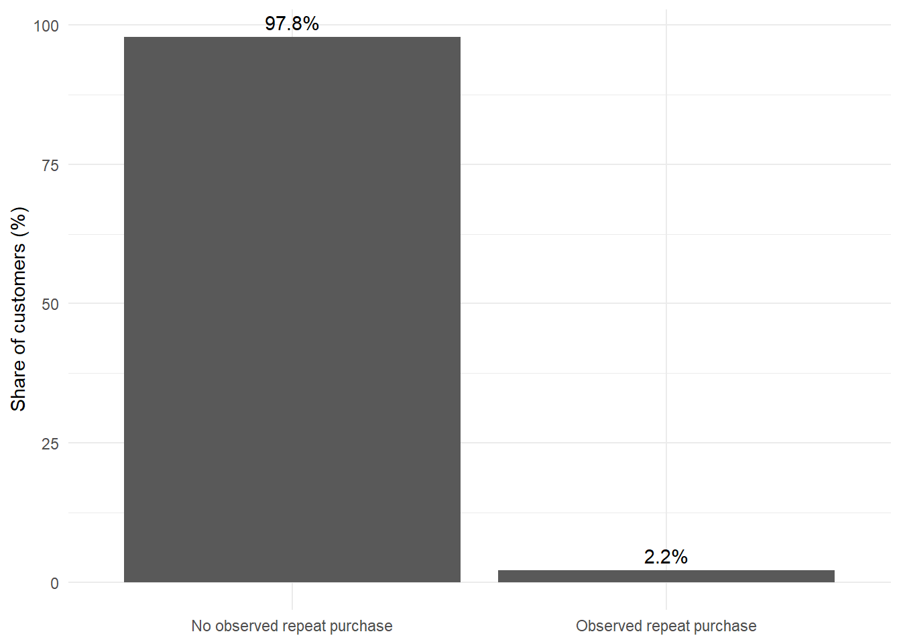
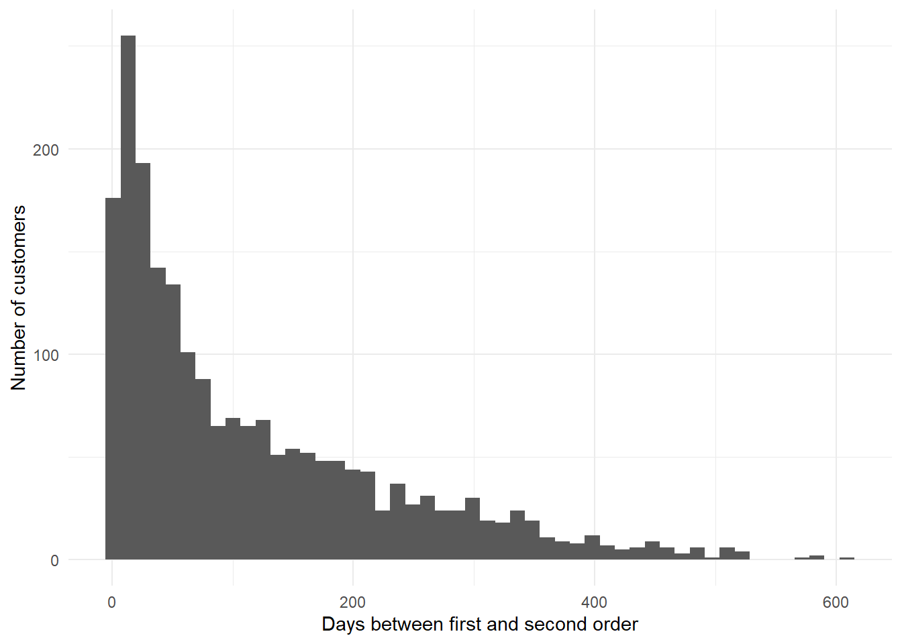
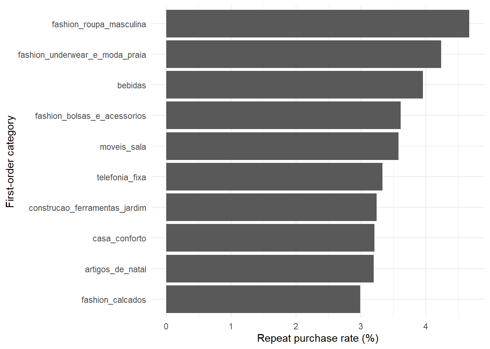
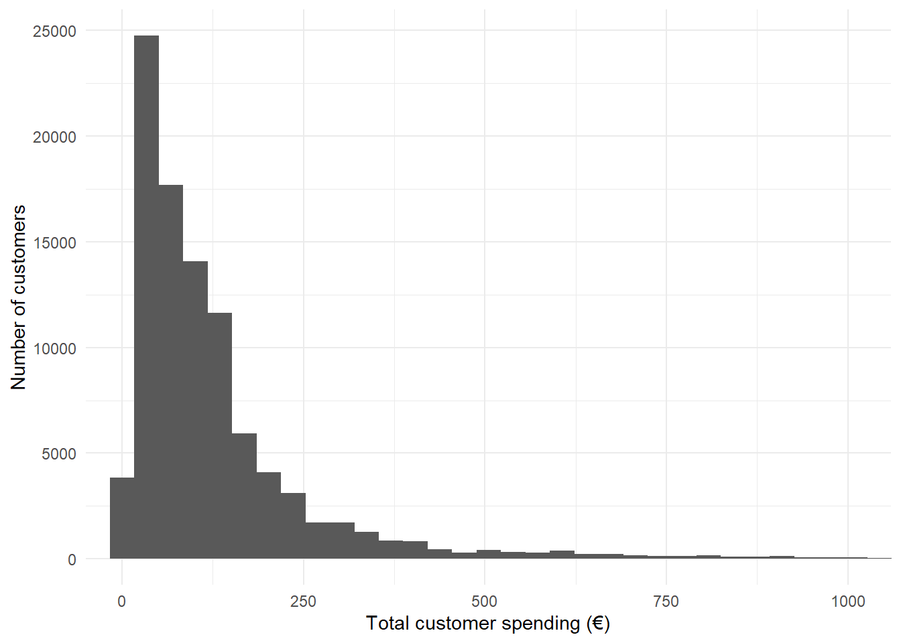
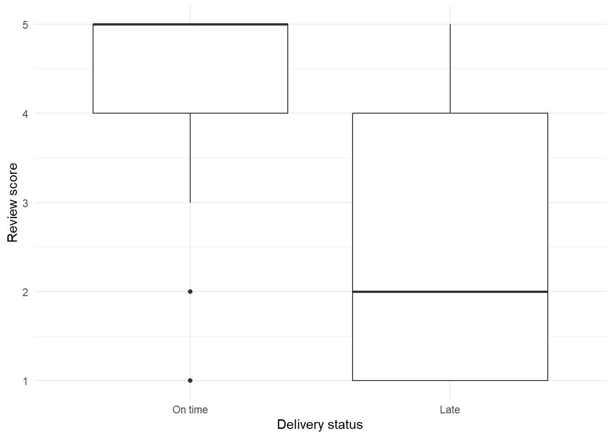
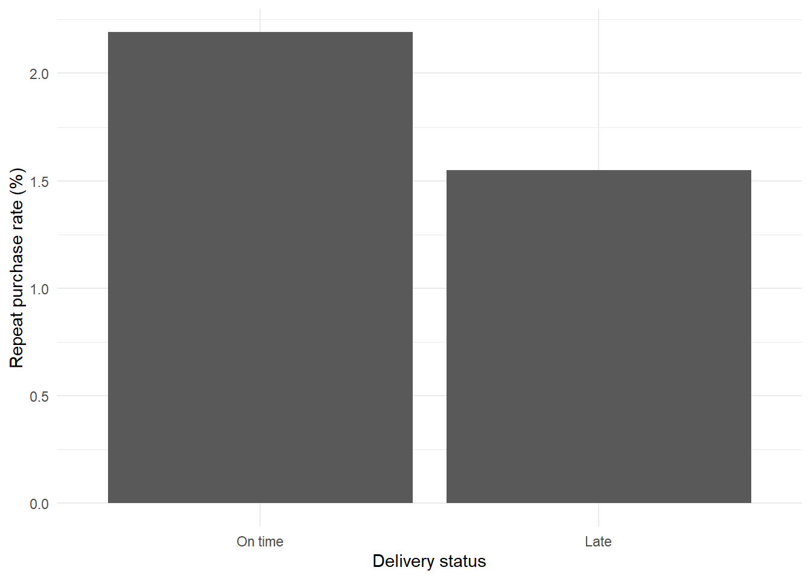

Customer Purchase Behavior Analysis
Introduction
This project analyzes customer purchasing behavior using the Olist Brazilian E-Commerce Public Dataset.
The analysis focuses on customer retention, purchasing behavior, and customer value, with the aim of understanding why some customers return and why some customers generate substantially more revenue than others.
The first research question is:
How common are repeat purchases, and what characteristics of the first purchase are associated with customers returning?
The analysis examines the frequency of repeat purchases, the time between the first and second order, differences between repeat and non-repeat customers, the relationship between first-order product categories and repeat purchasing, and whether repeat purchases can be predicted using information available from the first order.
The second research question is:
Which customers are most valuable, and can high-value customers be identified using information from their first purchase?
The analysis examines the distribution of customer spending, the concentration of revenue among high-value customers, differences in customer value across first-order categories, and whether high-value customers can be identified using characteristics of their first purchase.
The third research question is:
How is delivery performance associated with customer satisfaction and repeat purchasing?
The analysis examines whether late deliveries are associated with lower review scores and lower repeat-purchase rates.
Data
The analysis uses five datasets from the Olist e-commerce dataset:
- orders
- customers
- order items
- products
- reviews
The analysis focuses on customer orders, repeat purchasing, first-order characteristics, product categories, delivery experience, and customer reviews.
Data Preparation
The analysis uses customer_unique_id as the customer identifier. The customer_id in the orders data identifies a customer record, so orders are linked to the customer data and grouped using customer_unique_id to identify individual customers across orders.
Orders are sorted by purchase timestamp for each customer, allowing the first and second orders to be identified. A repeat purchase is defined as a second order occurring at least one day after the first order. Customers without a qualifying second order are classified as non-repeat customers.
For the first order, additional characteristics are collected, including order value, number of items, freight value, delivery time, product category, and review score. These variables are used to compare repeat and non-repeat customers and to evaluate whether repeat purchases can be predicted from information available at the first purchase.
Delivery performance is also included in the first-order data. Delivery time and whether the order was delivered later than the estimated delivery date are used to examine the relationship between delivery performance, customer satisfaction, and repeat purchasing.
In addition, all orders are aggregated at the customer level to measure customer value. Total spending, number of orders, number of items, average order value, and other customer-level measures are calculated. Customers in the top 10% of total spending are classified as high-value customers. These measures are then used to examine revenue concentration and whether high-value customers can be identified from characteristics of their first purchase.
Research Question 1: Repeat Purchases
Question
How common are repeat purchases, what characteristics are associated with customers returning, and can repeat purchases be predicted from information available at the first purchase?
The aim of this part of the analysis is to understand customer retention and identify patterns associated with repeat purchasing. The analysis first examines how common repeat purchases are and how long customers typically take to place a second order.
The analysis then compares repeat and non-repeat customers based on characteristics of their first purchase, including order value, number of items, freight value, delivery time, product category, and review score. Finally, a logistic regression model is used to evaluate whether repeat purchases can be predicted using information available from the first order.
How common are repeat purchases?
The analysis identified 96,096 unique customers. Of these, 2,070 customers made an observed repeat purchase, corresponding to a repeat purchase rate of approximately 2.2%.
The result shows that repeat purchasing is relatively uncommon in the observed data. Approximately 97.8% of customers did not have an observed second purchase, while only 2.2% made a qualifying repeat purchase.
This result should be interpreted with some caution. The dataset covers a limited observation period, meaning that customers who made their first purchase near the end of the period may not have had enough time to return. Therefore, the observed repeat purchase rate should not be interpreted as a complete measure of long-term customer retention.
How long does it take customers to return?
Among customers who made a qualifying second purchase, the median time between the first and second order was 74.8 days. The mean was considerably higher at 116.3 days, indicating a right-skewed distribution.
The shortest observed interval was approximately one day, while the longest was approximately 609 days.

The difference between the median and mean suggests that most returning customers purchase again relatively soon, while a smaller number return much later. The median of approximately 75 days therefore provides a more representative measure of typical repeat purchase timing than the mean.
Do first-order characteristics differ between customer groups?
The next step compares the first orders of customers who did and did not make a repeat purchase.
# A tibble: 2 × 13
repeat_purchase customers median_order_value mean_order_value median_items
<dbl> <int> <dbl> <dbl> <dbl>
1 0 94319 86.9 138. 1
2 1 2074 85.1 129. 1
# ℹ 8 more variables: mean_items <dbl>, median_freight <dbl>,
# mean_freight <dbl>, median_delivery_days <dbl>, mean_delivery_days <dbl>,
# median_review_score <dbl>, mean_review_score <dbl>,
# late_delivery_rate <dbl>The descriptive comparison shows relatively small differences in first-order value between the two groups. The median order value was approximately 86.9€ among customers without an observed repeat purchase and 85.1€ among repeat customers. Mean order value was also slightly lower among repeat customers (129€ compared with 138€).
A more noticeable difference was found in the number of items purchased. The mean number of items was 1.14 among customers without a repeat purchase and 1.21 among repeat customers.
This suggests that customers purchasing several items in their first order may be somewhat more likely to return, although the difference alone does not establish a causal relationship.
Does the first product category matter?
The first-order product category was also examined. To avoid unstable estimates based on very small customer groups, categories with fewer than 100 customers were excluded from the descriptive comparison.

There are clear differences in observed repeat purchase rates between product categories. Among categories with at least 100 customers, the highest observed rates included men’s fashion (4.67%), fashion underwear and beachwear (4.24%), beverages (3.96%), and fashion bags and accessories (3.61%).
However, the smallest categories also have relatively few repeat customers, so individual percentages should not be overinterpreted.
A Pearson chi-squared test with a simulated p-value was used because the category data contain many groups with relatively small counts.
Pearson's Chi-squared test with simulated p-value (based on 10000
replicates)
data: table(first_order_analysis$first_order_category, first_order_analysis$repeat_purchase)
X-squared = 158.86, df = NA, p-value = 2e-04The test produced a simulated p-value below 0.001, indicating that the distribution of repeat purchases differs across first-order categories. This provides evidence of an association between the category of the first purchase and subsequent repeat purchasing.
The result does not, however, mean that purchasing a particular category causes customers to return. Category differences may reflect other characteristics of the products or customers.
Can repeat purchases be predicted from the first order?
To examine whether repeat purchases can be predicted using information available from the first order, a logistic regression model was estimated.
The model included:
- first-order value
- number of items
- freight value
- first-order product category
The data were divided into training and test sets, with 80% of observations used for training and 20% for testing.
Call:
glm(formula = repeat_purchase ~ order_value + number_of_items +
freight_value + first_order_category, family = binomial,
data = train_data)
Coefficients:
Estimate Std. Error z value Pr(>|z|)
(Intercept) -4.401e+00 7.141e-01 -6.163 7.15e-10 ***
order_value -5.705e-05 1.453e-04 -0.393 0.694
number_of_items 1.856e-01 3.989e-02 4.652 3.29e-06 ***
freight_value -2.242e-03 1.638e-03 -1.369 0.171
first_order_categoryalimentos -2.240e-01 8.726e-01 -0.257 0.797
first_order_categoryalimentos_bebidas -1.880e-01 1.007e+00 -0.187 0.852
first_order_categoryartes -1.086e-01 1.007e+00 -0.108 0.914
first_order_categoryartigos_de_natal 1.083e+00 8.771e-01 1.234 0.217
first_order_categoryaudio 5.949e-01 8.089e-01 0.735 0.462
first_order_categoryautomotivo 2.913e-01 7.250e-01 0.402 0.688
first_order_categorybebes 1.060e-01 7.327e-01 0.145 0.885
first_order_categorybebidas 7.956e-01 8.101e-01 0.982 0.326
first_order_categorybeleza_saude 3.030e-01 7.181e-01 0.422 0.673
first_order_categorybrinquedos 1.772e-01 7.268e-01 0.244 0.807
first_order_categorycama_mesa_banho 6.456e-01 7.165e-01 0.901 0.368
first_order_categorycasa_conforto 6.275e-01 8.090e-01 0.776 0.438
first_order_categorycasa_construcao 5.508e-01 7.885e-01 0.699 0.485
first_order_categoryclimatizacao 4.534e-01 8.735e-01 0.519 0.604
first_order_categoryconsoles_games 9.504e-02 7.655e-01 0.124 0.901
first_order_categoryconstrucao_ferramentas_construcao -1.715e-01 8.077e-01 -0.212 0.832
first_order_categoryconstrucao_ferramentas_iluminacao -2.656e-01 1.007e+00 -0.264 0.792
first_order_categoryconstrucao_ferramentas_jardim 8.958e-01 8.458e-01 1.059 0.290
first_order_categoryconstrucao_ferramentas_seguranca -5.718e-01 1.231e+00 -0.464 0.642
first_order_categorycool_stuff 8.478e-02 7.292e-01 0.116 0.907
first_order_categoryeletrodomesticos 3.005e-01 7.810e-01 0.385 0.700
first_order_categoryeletrodomesticos_2 -8.814e-01 1.230e+00 -0.717 0.474
first_order_categoryeletronicos 6.117e-02 7.365e-01 0.083 0.934
first_order_categoryeletroportateis -1.241e-01 8.221e-01 -0.151 0.880
first_order_categoryesporte_lazer 6.429e-01 7.173e-01 0.896 0.370
first_order_categoryfashion_bolsas_e_acessorios 9.830e-01 7.269e-01 1.352 0.176
first_order_categoryfashion_calcados 8.962e-01 8.251e-01 1.086 0.277
first_order_categoryfashion_roupa_masculina 1.417e+00 8.488e-01 1.670 0.095 .
first_order_categoryfashion_underwear_e_moda_praia 1.178e+00 8.777e-01 1.342 0.180
first_order_categoryferramentas_jardim 5.631e-01 7.231e-01 0.779 0.436
first_order_categoryindustria_comercio_e_negocios 1.788e-01 9.203e-01 0.194 0.846
first_order_categoryinformatica_acessorios 1.877e-01 7.206e-01 0.260 0.795
first_order_categoryinstrumentos_musicais 4.796e-02 8.075e-01 0.059 0.953
first_order_categorylivros_interesse_geral 4.589e-01 7.886e-01 0.582 0.561
first_order_categorylivros_tecnicos -1.120e+00 1.230e+00 -0.910 0.363
first_order_categorymalas_acessorios 1.435e-01 7.656e-01 0.187 0.851
first_order_categorymarket_place 3.200e-01 8.735e-01 0.366 0.714
first_order_categorymoveis_cozinha_area_de_servico_jantar_e_jardim -2.334e-01 1.007e+00 -0.232 0.817
first_order_categorymoveis_decoracao 6.799e-01 7.181e-01 0.947 0.344
first_order_categorymoveis_escritorio 1.722e-01 7.567e-01 0.228 0.820
first_order_categorymoveis_sala 1.111e+00 7.673e-01 1.448 0.148
first_order_categoryother 4.023e-01 7.323e-01 0.549 0.583
first_order_categorypapelaria 2.859e-01 7.336e-01 0.390 0.697
first_order_categorypcs -1.119e+01 1.225e+02 -0.091 0.927
first_order_categoryperfumaria 5.226e-01 7.250e-01 0.721 0.471
first_order_categorypet_shop 5.837e-01 7.342e-01 0.795 0.427
first_order_categoryrelogios_presentes 1.539e-01 7.225e-01 0.213 0.831
first_order_categorysinalizacao_e_seguranca 2.683e-01 1.009e+00 0.266 0.790
first_order_categorytelefonia 3.590e-01 7.236e-01 0.496 0.620
first_order_categorytelefonia_fixa 1.062e+00 8.100e-01 1.311 0.190
first_order_categoryutilidades_domesticas 3.660e-01 7.206e-01 0.508 0.612
---
Signif. codes: 0 '***' 0.001 '**' 0.01 '*' 0.05 '.' 0.1 ' ' 1
(Dispersion parameter for binomial family taken to be 1)
Null deviance: 15674 on 76545 degrees of freedom
Residual deviance: 15530 on 76491 degrees of freedom
AIC: 15640
Number of Fisher Scoring iterations: 14The number of items in the first order was the clearest continuous predictor in the model. Its coefficient was positive and statistically significant (p < 0.001). This indicates that customers who purchased more items in their first order tended to have higher odds of making a repeat purchase.
Order value and freight value were not statistically significant predictors in the model.
Although the category-level coefficients varied, most individual category effects were not statistically significant. This is consistent with the large number of categories and relatively small number of repeat purchases.
How well can repeat purchases be predicted?
The model was evaluated using the test data and the area under the ROC curve (AUC).
Area under the curve: 0.5458The resulting AUC was 0.546.
An AUC of 0.5 corresponds to random classification. Therefore, the model’s performance is only slightly better than random prediction.
This is an important finding. Although some variables are statistically associated with repeat purchasing, the available first-order information does not provide strong enough predictive power to reliably identify which individual customers will return.
Findings
Overall, the analysis produces four main findings.
Repeat purchasing is relatively uncommon. Only approximately 2.2% of unique customers made an observed second purchase at least one day after their first order.
Returning customers typically return after several weeks. The median time to a second order was approximately 75 days, although some customers returned substantially later.
Product category is associated with repeat purchasing. The chi-squared test indicates statistically significant differences in repeat purchasing across first-order categories. However, small category sizes mean that individual category percentages should be interpreted cautiously.
Predicting individual repeat purchases is difficult. The number of items in the first order was positively associated with repeat purchasing, but the logistic regression model achieved an AUC of only 0.546 on unseen data. This suggests that the variables available from the first purchase are not sufficient for accurate individual-level prediction.
Taken together, the results suggest that customer retention is a potential business opportunity, but the available transaction-level variables do not provide a strong basis for predicting individual repeat customers. The next analysis can therefore focus on understanding customer value and which customer segments represent the greatest retention opportunity.
Research Question 2: Customer Value
Question
Which customers are most valuable, and can high-value customers be identified using information from their first purchase?
The previous analysis focused on whether a customer makes another purchase. However, repeat purchasing alone does not describe the economic value of a customer. A customer who makes several small purchases may generate less revenue than a customer who makes fewer but substantially larger purchases.
Therefore, this part of the analysis focuses on customer value. Customers are classified as high-value customers if their total spending is in the top 10% of the customer distribution. The analysis then examines how customer value is distributed and whether high-value customers can be identified using information available from their first purchase.
Customer Value
Customer value is calculated by aggregating all orders belonging to the same customer_unique_id. For each customer, total spending, total freight costs, number of orders, number of items, and average order value are calculated.
# A tibble: 2 × 6
high_value_customer customers median_total_spend mean_total_spend median_number_of_orders mean_number_of_orders
<lgl> <int> <dbl> <dbl> <dbl> <dbl>
1 FALSE 86753 79 92.3 1 1.03
2 TRUE 9640 420 586. 1 1.12The results show a clear difference between high-value and other customers. The median total spending among high-value customers is 420€, compared with 78.90€ among other customers. High-value customers also place slightly more orders on average.
Revenue Concentration
High-value customers represent only 10% of the customer base, but they account for 41.4% of total customer spending.
# A tibble: 1 × 4
high_value_customers total_customers high_value_share high_value_revenue_share
<int> <int> <dbl> <dbl>
1 9640 96393 10.0 41.4This indicates that customer value is highly concentrated. A relatively small proportion of customers generates a disproportionately large share of total revenue.
Distribution of Customer Spending
The distribution of total customer spending is strongly right-skewed. Most customers spend relatively small amounts, while a small number of customers have substantially higher total spending.

The high concentration of spending supports the use of a high-value customer segment rather than relying only on average customer spending.
High-Value Customers by First-Order Category
The first-order category is also compared across high-value and other customers.
# A tibble: 15 × 5
first_order_category customers high_value_customers high_value_rate median_total_spend
<chr> <int> <int> <dbl> <dbl>
1 pcs 176 175 99.4 1200
2 agro_industria_e_comercio 178 93 52.2 391.
3 eletrodomesticos_2 225 104 46.2 230.
4 instrumentos_musicais 612 184 30.1 127.
5 construcao_ferramentas_seguranca 158 46 29.1 140.
6 eletroportateis 616 179 29.1 109
7 moveis_cozinha_area_de_servico_jantar_e_jardim 238 54 22.7 130.
8 climatizacao 242 54 22.3 139
9 construcao_ferramentas_construcao 720 143 19.9 100.0
10 moveis_escritorio 1239 233 18.8 170.
11 casa_construcao 463 83 17.9 120.
12 relogios_presentes 5431 972 17.9 144
13 consoles_games 1041 180 17.3 69.9
14 moveis_sala 391 64 16.4 115.
15 construcao_ferramentas_iluminacao 229 36 15.7 169 The high-value rate varies substantially across first-order product categories. Among categories with at least 100 customers, pcs has by far the highest high-value rate at 99.4%, although this category contains only 176 customers. The next highest rates are observed for agro_industria_e_comercio (52.2%) and eletrodomesticos_2 (46.2%).
Other categories with relatively high high-value rates include instrumentos_musicais (30.1%), construcao_ferramentas_seguranca (29.1%), and eletroportateis (29.1%). In contrast, larger categories such as relogios_presentes, with 5,431 customers, have a more moderate high-value rate of 17.9%.
The results suggest that the product category of the first purchase may be associated with subsequent customer value. However, the highest rates in some categories are based on relatively small customer groups, so these results should be interpreted with caution.
Predicting High-Value Customers
The next step is to test whether high-value customers can be identified using information available from their first purchase.
A logistic regression model is used with high-value customer status as the outcome. The predictors describe the first purchase:
order value
number of items
freight value
delivery time
review score
first-order product category
The model is evaluated on a separate test set using ROC-AUC.
Call:
glm(formula = high_value_customer ~ order_value + number_of_items +
freight_value + delivery_days + review_score + first_order_category,
family = binomial, data = train_data_value)
Coefficients:
Estimate Std. Error z value Pr(>|z|)
(Intercept) -1.084e+01 6.681e-01 -16.229 <2e-16 ***
order_value 3.614e-02 4.901e-04 73.742 <2e-16 ***
number_of_items 2.468e-02 4.393e-02 0.562 0.5743
freight_value -2.978e-03 1.309e-03 -2.276 0.0229 *
delivery_days -2.143e-03 3.053e-03 -0.702 0.4827
review_score -2.425e-03 2.198e-02 -0.110 0.9121
first_order_categoryalimentos 1.003e+00 9.949e-01 1.008 0.3133
first_order_categoryalimentos_bebidas 9.754e-01 1.221e+00 0.799 0.4245
first_order_categoryartes 1.216e-01 1.366e+00 0.089 0.9291
first_order_categoryartigos_de_natal 4.328e-01 1.407e+00 0.308 0.7583
first_order_categoryaudio -9.681e-01 1.104e+00 -0.877 0.3805
first_order_categoryautomotivo 7.296e-01 6.539e-01 1.116 0.2645
first_order_categorybebes 4.172e-01 6.653e-01 0.627 0.5307
first_order_categorybebidas -1.813e+00 2.655e+00 -0.683 0.4948
first_order_categorybeleza_saude 1.157e+00 6.458e-01 1.792 0.0731 .
first_order_categorybrinquedos 6.957e-01 6.529e-01 1.066 0.2866
first_order_categorycama_mesa_banho 1.172e+00 6.458e-01 1.815 0.0695 .
first_order_categorycasa_conforto 3.836e-01 7.202e-01 0.533 0.5943
first_order_categorycasa_construcao 1.298e+00 7.231e-01 1.795 0.0727 .
first_order_categoryclimatizacao 1.422e+00 7.522e-01 1.890 0.0588 .
first_order_categoryconsoles_games 1.218e+00 6.992e-01 1.742 0.0815 .
first_order_categoryconstrucao_ferramentas_construcao 1.138e+00 6.984e-01 1.630 0.1032
first_order_categoryconstrucao_ferramentas_iluminacao 4.737e-01 7.274e-01 0.651 0.5149
first_order_categoryconstrucao_ferramentas_jardim -5.433e-01 1.363e+00 -0.398 0.6903
first_order_categoryconstrucao_ferramentas_seguranca 1.422e+00 8.258e-01 1.722 0.0851 .
first_order_categorycool_stuff 1.064e-01 6.537e-01 0.163 0.8707
first_order_categoryeletrodomesticos 1.297e+00 7.949e-01 1.632 0.1028
first_order_categoryeletrodomesticos_2 -4.797e-01 9.305e-01 -0.516 0.6062
first_order_categoryeletronicos 6.460e-01 7.121e-01 0.907 0.3643
first_order_categoryeletroportateis 1.474e+00 7.157e-01 2.059 0.0395 *
first_order_categoryesporte_lazer 8.623e-01 6.463e-01 1.334 0.1821
first_order_categoryfashion_bolsas_e_acessorios 7.773e-01 6.990e-01 1.112 0.2661
first_order_categoryfashion_calcados 2.051e+00 7.980e-01 2.570 0.0102 *
first_order_categoryfashion_roupa_masculina 1.037e+00 1.080e+00 0.960 0.3372
first_order_categoryfashion_underwear_e_moda_praia 1.948e+00 1.205e+00 1.616 0.1061
first_order_categoryferramentas_jardim 9.971e-01 6.601e-01 1.511 0.1309
first_order_categoryindustria_comercio_e_negocios 5.248e-01 9.974e-01 0.526 0.5988
first_order_categoryinformatica_acessorios 8.835e-01 6.479e-01 1.364 0.1726
first_order_categoryinstrumentos_musicais 5.745e-01 6.991e-01 0.822 0.4112
first_order_categorylivros_interesse_geral 9.702e-01 1.016e+00 0.955 0.3395
first_order_categorylivros_tecnicos -1.232e+00 1.180e+00 -1.044 0.2963
first_order_categorymalas_acessorios 6.407e-01 6.699e-01 0.956 0.3389
first_order_categorymarket_place 7.752e-01 8.171e-01 0.949 0.3427
first_order_categorymoveis_cozinha_area_de_servico_jantar_e_jardim 1.081e+00 7.953e-01 1.359 0.1741
first_order_categorymoveis_decoracao 1.170e+00 6.465e-01 1.809 0.0704 .
first_order_categorymoveis_escritorio 6.568e-01 6.611e-01 0.994 0.3205
first_order_categorymoveis_sala 1.488e+00 7.483e-01 1.989 0.0467 *
first_order_categoryother 8.423e-01 7.116e-01 1.184 0.2366
first_order_categorypapelaria 8.434e-01 6.824e-01 1.236 0.2165
first_order_categorypcs 1.343e+00 4.436e+01 0.030 0.9759
first_order_categoryperfumaria 8.135e-01 6.509e-01 1.250 0.2113
first_order_categorypet_shop 9.856e-01 6.760e-01 1.458 0.1449
first_order_categoryrelogios_presentes 3.052e-01 6.466e-01 0.472 0.6369
first_order_categorysinalizacao_e_seguranca 1.050e+00 9.826e-01 1.069 0.2851
first_order_categorytelefonia 8.493e-01 6.580e-01 1.291 0.1968
first_order_categorytelefonia_fixa 5.110e-01 8.943e-01 0.571 0.5677
first_order_categoryutilidades_domesticas 6.549e-01 6.523e-01 1.004 0.3154
---
Signif. codes: 0 '***' 0.001 '**' 0.01 '*' 0.05 '.' 0.1 ' ' 1
(Dispersion parameter for binomial family taken to be 1)
Null deviance: 48418.7 on 73751 degrees of freedom
Residual deviance: 9148.4 on 73695 degrees of freedom
AIC: 9262.4
Number of Fisher Scoring iterations: 14The strongest predictor is the value of the first order. The coefficient for order_value is positive and highly statistically significant, indicating that customers with larger first purchases are substantially more likely to belong to the high-value customer group.
Most individual product categories are not statistically significant after controlling for the other first-order characteristics.
Model Performance
The model achieves a ROC-AUC of 0.98 on the test data.
[1] 0.9780744An AUC of approximately 0.98 indicates excellent discrimination between high-value and other customers in the test data.
However, the very high AUC should be interpreted with care. High-value status is defined using customers’ total spending, while first-order value is included as a predictor. Therefore, a large first purchase naturally provides strong information about whether the customer’s eventual total spending will be high.
The result should therefore not be interpreted as evidence that high-value customers can be identified perfectly from general behavioral characteristics. Instead, it shows that initial purchase value is a very strong indicator of eventual customer value in this dataset.
Conclusion
The analysis shows a strong concentration of customer value in the Olist data. The top 10% of customers account for 41.4% of total spending, while their median spending is substantially higher than that of other customers.
The predictive analysis also shows that high-value customers can be distinguished very accurately using first-order information, with a test-set ROC-AUC of 0.98.. The dominant predictor is the value of the first purchase.
This provides a different perspective from the first research question. While repeat purchasing was relatively difficult to predict from first-order characteristics, customer value was much more strongly associated with the initial order value.
Research Question 3: Delivery Experience and Customer Satisfaction
Question
How is delivery performance associated with customer satisfaction and repeat purchasing?
The previous analyses focused on customer retention and customer value. This part of the analysis examines whether the delivery experience is associated with customer satisfaction and customers’ likelihood of making another purchase.
The analysis compares on-time and late deliveries using review scores and repeat-purchase rates. Statistical tests are also used to evaluate whether the observed differences are unlikely to be due to random variation.
Delivery Performance and Repeat Purchasing
The delivery experience differs somewhat between customers who do and do not make another purchase.
# A tibble: 2 × 7
repeat_purchase customers median_delivery_days mean_delivery_days late_delivery_rate median_review_score mean_review_score
<dbl> <int> <dbl> <dbl> <dbl> <dbl> <dbl>
1 0 94319 10.2 12.6 8.19 5 4.08
2 1 2074 10.0 11.9 5.90 5 4.19Repeat customers experienced slightly fewer late deliveries than non-repeat customers. The late-delivery rate was 5.91% among repeat customers compared with 8.19% among customers who did not make another observed repeat purchase.
The average delivery time was also slightly shorter among repeat customers, at 11.9 days compared with 12.6 days among non-repeat customers. However, the difference in delivery time itself is relatively small.
Delivery Performance and Review Scores
A much stronger difference can be observed in customer review scores.
# A tibble: 2 × 4
delivered_late customers median_review_score mean_review_score
<dbl> <int> <dbl> <dbl>
1 0 85463 5 4.29
2 1 7458 2 2.56Customers whose orders were delivered on time gave an average review score of 4.29, while customers whose orders were delivered late gave an average score of only 2.56.
The median review score was 5 for on-time deliveries and 2 for late deliveries. This indicates a substantial relationship between delivery performance and customer satisfaction.
The difference in review scores was tested using a Wilcoxon rank-sum test.
Wilcoxon rank sum test with continuity correction
data: review_score by delivered_late
W = 495413418, p-value < 2.2e-16
alternative hypothesis: true location shift is not equal to 0The test produced a p-value below 2.2 × 10⁻¹⁶, providing very strong statistical evidence that review-score distributions differ between on-time and late deliveries.
Review Scores by Delivery Status
The difference can also be seen visually in the distribution of review scores.

The distribution shows that late deliveries are associated with substantially lower review scores.
Delivery Performance and Repeat Purchases
The repeat-purchase rate was also compared between on-time and late deliveries.
# A tibble: 2 × 4
delivered_late customers repeat_customers repeat_rate
<dbl> <int> <dbl> <dbl>
1 0 85922 1883 2.19
2 1 7614 118 1.55The repeat-purchase rate was 2.19% for customers whose first order was delivered on time, compared with 1.55% for customers whose first order was delivered late.
A chi-squared test was used to evaluate the association between delivery status and repeat purchasing.
Pearson's Chi-squared test with simulated p-value (based on 10000 replicates)
data: table(first_order_analysis$delivered_late, first_order_analysis$repeat_purchase)
X-squared = 13.759, df = NA, p-value = 5e-04The test produced a p-value of 0.0006, indicating a statistically significant association between delivery status and repeat purchasing.
The difference is relatively small in absolute terms, however. Therefore, delivery performance appears to have a much stronger relationship with customer satisfaction than with repeat purchasing in this dataset.
Repeat Purchase Rate by Delivery Status

The figure shows the lower repeat-purchase rate among customers whose first order was delivered late. Although the difference is statistically significant, the effect is considerably smaller than the difference observed in review scores.
Conclusion
The analysis shows a strong association between delivery performance and customer satisfaction. Late deliveries are associated with substantially lower review scores, with the average score falling from 4.29 for on-time deliveries to 2.56 for late deliveries.
Delivery performance is also statistically associated with repeat purchasing. Customers with on-time first deliveries had a repeat-purchase rate of 2.19%, compared with 1.55% among customers whose first delivery was late.
However, the results should be interpreted as associations rather than causal effects. Other factors may influence both delivery performance and customer behavior. Nevertheless, the results suggest that reliable delivery is strongly related to customer satisfaction and may also be relevant for customer retention.